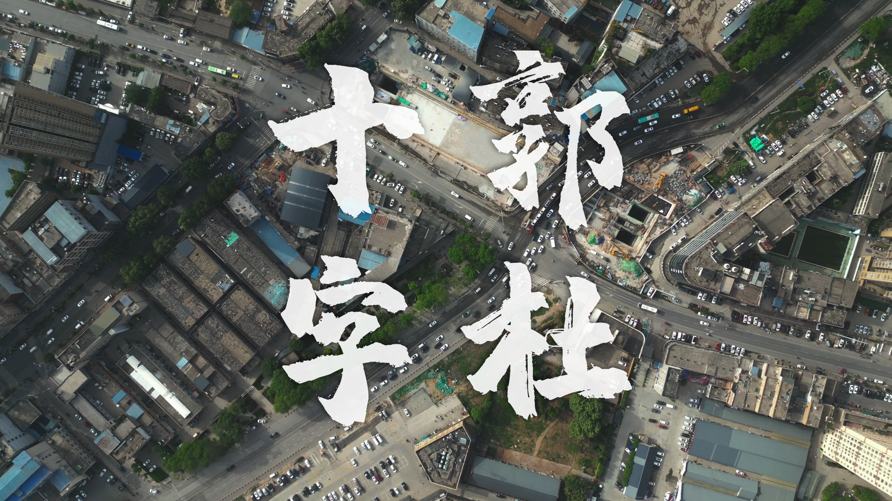
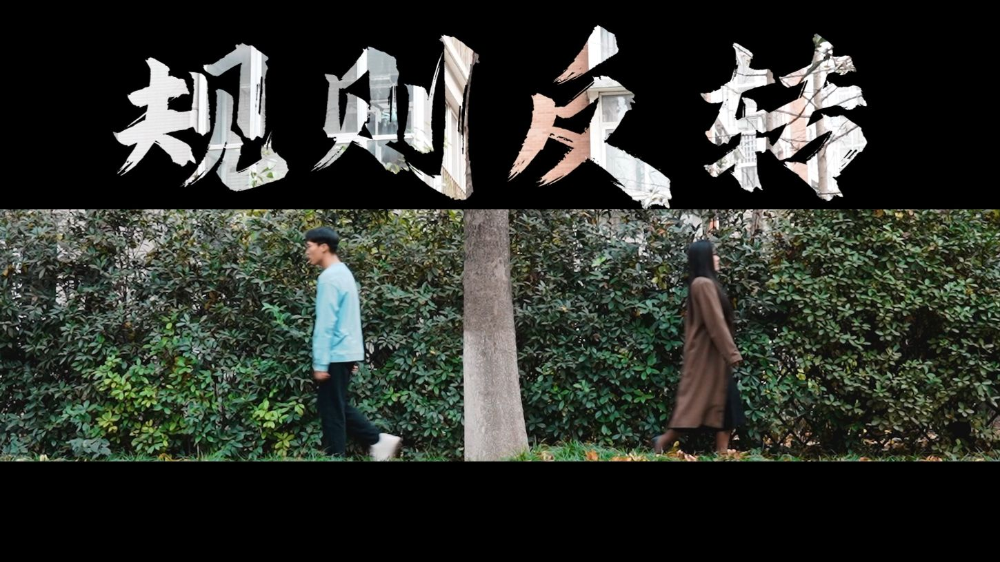

Documentary • Cinematography
纪录片《郭杜十字》
主导拍摄工作，以独特视角展现社会问题。影片于B站获得 15万+ 播放量，引发广泛关注。
影视全流程制作 / AI 生成式影像

主导拍摄工作，以独特视角展现社会问题。影片于B站获得 15万+ 播放量，引发广泛关注。
导演 / 拍摄 / 剪辑

获奖作品 / 传媒艺术节二等奖
擅长运用 AI 工具进行图像生成与视频制作，结合 PR/AE 后期技术，实现创意内容的高效输出。
西安外事学院 • 广播电视编导专业
始终保持对新技术的探索热情，擅长通过技术融合提升创作效率与艺术表现力。我致力于将传统影视叙事与 AI 生成技术相结合，打造具有传播价值的创新视觉内容。